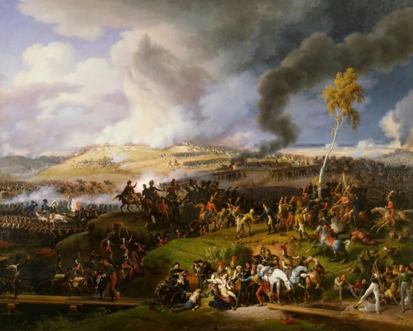

Бородинское сражение — крупнейшее сражение Отечественной войны 1812 года между русской армией под командованием генерала от инфантерии светлейшего князя Михаила Кутузова и французской армией под командованием императора Наполеона I Бонапарта. Состоялось 26 августа(7 сентября) 1812 года у села Бородино, в 125 км к западу от Москвы. Является самым кровопролитным однодневным сражением в истории.
В июне-августе 1812 года русская армия отступала от Немана до Можайска. Французы имели численное превосходство, поэтому разгромить их в полевом сражении представляло собой достаточно трудную задачу. Информация об отступлении достигла царского двора в Петербурге. Император Александр I вместо Барклая-де-Толли назначил главнокомандующим Кутузова. Его план ведения войны была построена на истощении противника и ожидании подкреплений.
22 августа русская армия остановилась у села Бородино, которое отделяли от Москвы 125 километров. Именно тогда Кутузов принял решение дать сражение. 24 августа произошел бой за Шевардинский редут (земляное укрепление), что позволило задержать французов и построить укрепления накануне большой битвы.
25 августа обе стороны готовились к сражению. Французская армия подходила к Бородину тремя колоннами по Старой Смоленской дороге. Новая Смоленская дорога, наоборот, находилась в тылу русской армии. Наполеон 25 августа заметил, что левый фланг русской армии относительно слабый и решил нанести удар по нему.
Ход битвы
Между началом и концом битвы прошло 12 часов. Артиллерийский обстрел французы начали в 05:30 утра 26 августа сразу из 100 орудий.
В утренние часы французы провели восемь атак на укрепления, которые вошли в военную историю как “Багратионовы флеши”. Сам же генерал Багратион там был тяжело ранен и скончался через две недели.
Следующим эпизодом стал бой за Утицкий курган в южной части поля битвы. Его обороняли московские ополченцы и егеря. На них пошел в атаку польский корпус Понятовского. Защитники кургана отошли уже после отступления Багратиона с флешей. В боях за Утицкий курган погиб генерал Тучков.
После занятия Багратионовых флешей основную силу удара французской армии испытала на себе батарея генерала Раевского. Она продержалась до 16:00. Во время ее обороны попал в плен генерал Лихачев и был убит французский генерал Огюст Коленкур. При штурме батареи французы понесли большие потери в кавалерии (кирасирах), поэтому батарею Раевского стали образно называть “могила французской кавалерии”.
К 18:00 Наполеон заметил, что русская армия прочно держит позицию на поле боя, даже несмотря на потерю некоторых укреплений. Он отказался послать в бой гвардию, которую в прежних сражениях держал для последней решительной атаки.
Артиллерийская дуэль продолжалась до 7 часов вечера. В полночь Кутузов решил отвести армию за город Можайск. Потери русской армии в этой битве убитыми и ранеными составили 45 тыс. человек. Французы также потеряли около 40 тыс. солдат.